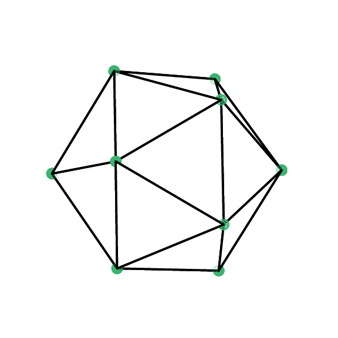

Kazuki Koga / 古賀一基

Department of Mathematical and Computing Science,
Tokyo Institute of Technology
Researcher
Doctor of Informatics
Email: koga.k.ac at m.titech.ac.jp
My research interests include: numerical solutions of PDEs and BIEs, moving interface problems, approximations of singular integrals, mesh refinement, signal processing, fluid mechanics, numerical optimization, and GPU computing.
Employment:
- Department of Mathematical and Computing Science, Tokyo Institute of Technology
- Researcher, Apr 2023 - present (Host: Prof. Zin Arai)
- Department of Mathematics, Kyoto University
- Program-Specific Assistant Professor, Apr 2021 - Mar 2023
- Program-Specific Researcher, Dec 2020 - Mar 2021 (Host: Prof. Takashi Sakajo)
- Research Assistant Staff , Apr 2020 - Nov 2020 (Host: Prof. Takashi Sakajo)
Education:
- Doctor of Informatics, Kyoto University 2020 (Advisor: Prof. Toshio Aoyagi)
- Master of Informatics, Kyoto University 2016
- Bachelor of Economics, Kyoto University 2013
Visiting Appointments:
- Department of Mathematics at UC Berkeley, Jul 2018 - Dec 2018 (Host: Prof. Jon Wilkening)
- ICERM at Brown University, Feb 2017 - Apr 2017 (Mentor: Prof. Jon Wilkening)
Publications:
- Journal Articles
- K. Koga and J. Wilkening, A new spatio-temporal discretization of axisymmetric vortex sheets with surface tension, in preparation.
- K. Koga, Computing weak distances between the 2-sphere and its nonsmooth approximations, submitted (2023) [arxiv]
- K. Koga, Numerical reparametrization of periodic planar curves via curvature interpolation, SIAM J. Sci. Comput., 44(3), A1703-A1722 (2022) [DOI, arxiv]
- T. Uda, T. Sakajo, M. Inatsu and K. Koga, Morphological identification of atmospheric blockings by topological flow data analysis, J. Meteo. Soc. Japan vol., 99, 1169−1183 (2021) [DOI]
- K. Koga, Signal processing approach to mesh refinement in simulations of axisymmetric droplet dynamics, J. Comput. Appl. Math., 383, 113131 (2021) [DOI, arxiv]
- Conference Proceedings
- K. Koga and M. Funakoshi, Recent Progress in Simulations of 3D Vortex Sheets with
Surface Tension, In Mathematical Insights into Advanced Computer Graphics
Techniques, pp.119-129, Springer Singapore, 2019.